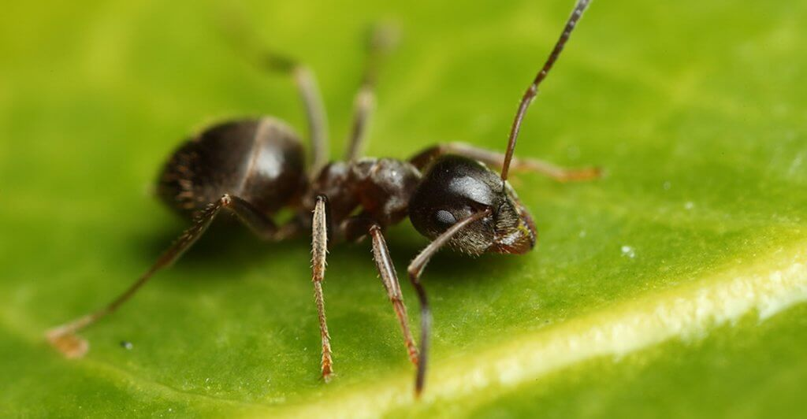

Введение
Семейство МУРАВЬИ (Formicidae) - это самое многочисленное по количеству особей семейство насекомых.
Да и по количеству видов немногие семейства могут поспорить с ним. Сейчас насчитывается примерно 6000 видов муравьев, но, учитывая, что каждый год описываются все новые и новые виды и роды и то, что муравьи многих районов земного шара почти не изучены, число это будет значительно увеличено. Все муравьи имеют характерный признак, по которому их можно отличить от любых других перепончатокрылых: между грудью и брюшком у них имеется тонкий стебелек из одного или двух члеников, тогда как у всех остальных перепончатокрылых брюшко непосредственно причленяется к груди. Все без исключения муравьи являются общественными насекомыми.
Размножение и расселение муравьев происходит следующим образом: раз в году (У некоторых видов дважды), у каждого вида в свое время, в гнезде появляется множество крылатых муравьев. Это молодые самки и самцы. Некоторое время они еще живут в гнезде, а потом начинают покидать его. В теплые осенние дни, особенно после дождей, над гнездами некоторых наших видов поднимаются целые облака крылатых муравьев. Издали кажется, будто с земли поднимается легкий дым. Массы ласточек, стрижей и других птиц с криками летают в этих роях, хватая муравьев. В воздухе или на земле происходит оплодотворение, после чего самцы вскоре погибают, а самки отгрызают крылья и начинают отыскивать место, подходящее для основания гнезда. Здесь самка роет небольшую норку и откладывает первую порцию яичек, обычно не больше десятка. Когда из яичек вылупятся личинки, она начинает кормить их. У муравьев-бульдогов и некоторых других самки выходят из гнезд и охотятся на насекомых. Но у большинства муравьев самка так и не покидает гнезда до конца жизни, а личинок она кормит выделениями слюнных желез. На образование питательных веществ идут запасы жира и ненужная уже теперь мускулатура крыльев. В пищу идет и большая часть яиц, так что в конце концов до взрослого состояния доживают всего 2—3 рабочих. Обычно они бывают гораздо мельче нормальных. Теперь самка уже перестает кормить личинок и занимается только откладкой яиц. Всю работу берут на себя молодые рабочие.
В жизни муравьиной семьи период самостоятельного существования самки наиболее опасен. Подавляющее большинство семей гибнет, так и не успев возникнуть, именно в это время. Поэтому у целого ряда видов появились приспособления, позволяющие избежать гибели. Самый простой способ — это деление старых семей, что аналогично роению медоносных пчел. Так размножаются бродячие муравьи и иногда рыжие лесные муравьи. Самка малайского муравья каребары (Саrebara), около 2 см длиной, вылетая из гнезда, прихватывает несколько рабочих, которые имеют длину всего 1—2 мм. Эти рабочие держатся челюстями за ножки самки.
Экономическое значение муравьев чрезвычайно велико. Многие земляные муравьи являются полезными почвообразователями, перемешивающими, рыхлящими и удобряющими почву. Некоторые виды, например рыжие лесные муравьи, муравьи-портные и некоторые другие, используются с большим эффектом для борьбы с вредителями растений. Есть среди муравьев разрушители древесины и вредители сельского хозяйства, например муравьи-жнецы и муравьи-листорезы и т. д. Но те же муравьи-жнецы играют на естественных пастбищах большую положительную роль, так как разносят семена многих растений и улучшают почву. Некоторые муравьи могут переносить болезни человека и животных.
Семейство муравьев распадается на несколько подсемейств, некоторые из которых мы и рассмотрим.
- Муравьи-бульдоги муравьи (Ponerinae) — это наиболее примитивные из муравьев.
Стебелек между грудью и брюшком у них одночлениковый, но первый членик брюшка отделен от последующих перетяжкой. Жало развито сильно.
У муравьев-бульдогов почти не развит трофаллаксис, питаются они только насекомыми и другими беспозвоночными и не собирают падь тлей.
Самки, основывая гнездо, постоянно выходят на охоту, чтобы добыть пищу для личинок/
- К подсемейству мирмицин муравьи (Myrmicinae) относится наибольшее число видов муравьев.
Все представители подсемейства характеризуются наличием 2-членикового-стебелька и жала.
Самые массовые представители подсемейства в наших лесах — виды из рода мирмика (Myrmica).
Эти рыжие муравьи: средних размеров (4—6 мм длиной) довольно больно жалят. Живут они в подземных гнездах и охотятся на малоподвижных насекомых в подстилке или на поверхности почвы и посещают колонии тлей.
Охотно поедают они и мертвых насекомых. В степях и пустынях России, Западной Европы и Северной Африки часто можно встретить муравьев-жнецов (Messor).
Эти муравьи питаются исключительно семенами различных растений. Сходно поведение и американских муравьев-жнецов (Pogonomyrmex, Veromessor).
На юге США, в Центральной и Южной Америке обитают муравьи-листорезы (Atta, Acromyrmex).